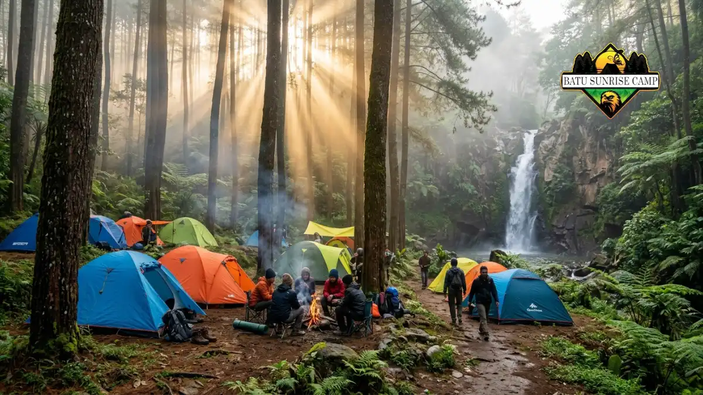

Tempat camping di Kediri yang paling direkomendasikan tahun 2026 antara lain Gazebo Wilis, Wana Wisata Sumber Biru, Air Terjun Irenggolo, Sunrise Point P-29, dan Wisata Balekambang, dengan harga tiket masuk mulai dari gratis hingga sekitar Rp20.000 per tenda.
Kediri, kota dan kabupaten di Jawa Timur, dikenal bukan hanya karena kuliner tahu takwanya, tetapi juga karena kawasan alam di lereng Gunung Wilis yang cocok untuk aktivitas camping.
Bagi warga Kediri maupun wisatawan dari luar kota, camping menjadi alternatif liburan hemat yang menawarkan udara segar, pemandangan alam, dan suasana malam yang tenang, tanpa perlu menempuh perjalanan jauh ke gunung tinggi.
Artikel ini merangkum tempat camping di Kediri yang paling banyak direkomendasikan pada 2026, lengkap dengan estimasi harga, karakteristik lokasi, dan hal yang perlu diperhatikan sebelum berangkat.
Apa Saja Tempat Camping di Kediri yang Direkomendasikan?
Tempat camping di Kediri yang paling sering direkomendasikan meliputi Gazebo Wilis, Wana Wisata Sumber Biru, Air Terjun Irenggolo, Sunrise Point P-29, dan Wisata Balekambang, yang sebagian besar terletak di kawasan lereng Gunung Wilis.
Gazebo Wilis
Gazebo Wilis berlokasi di Dusun Besuki, Desa Jugo, Kecamatan Mojo, Kabupaten Kediri, dan menjadi salah satu tempat camping yang cukup populer.
Lokasi ini berjarak sekitar 21 kilometer dari Alun-Alun Kota Kediri dan berada di lereng Gunung Wilis, sehingga menyuguhkan pemandangan yang asri, termasuk pemandangan city lights di malam hari dan sunrise di pagi hari.
Camping ground ini buka setiap hari, namun pengunjung yang ingin bermalam disarankan mendaftar terlebih dahulu kepada pengelola.
Bagi yang tidak membawa perlengkapan sendiri, Gazebo Wilis juga menyediakan persewaan tenda sehingga pengunjung tidak perlu repot membawa tenda dari rumah.
Wana Wisata Sumber Biru
Masih di kawasan lereng Gunung Wilis, Wana Wisata Sumber Biru menawarkan udara sejuk, panorama hijau, dan berbagai aktivitas alam, sehingga menjadi favorit pecinta alam yang ingin trekking, berkemah, atau bersantai di gazebo sambil menikmati pemandangan.
Selain camping, lokasi ini juga menyediakan aktivitas tambahan seperti trekking dengan jalur bertingkat kesulitan, kolam renang, dan wahana flying fox, sehingga cocok untuk rombongan keluarga yang ingin kombinasi camping dan wisata air.
Air Terjun Irenggolo

Suasana camping di area Air Terjun Irenggolo Kediri yang dikelilingi hutan pinus.
Air Terjun Irenggolo terletak di tengah hutan pinus yang rindang dan menjadi tempat yang cocok untuk berkemah sambil merasakan kesejukan udara pegunungan.
Air terjun ini memiliki ketinggian sekitar 80 meter dengan dua aliran air yang mengalir deras, menciptakan suasana yang tenang dan cocok untuk melepas penat dari rutinitas sehari-hari.
Dari sisi akses, jalan menuju lokasi tergolong bagus dan bisa dilalui motor maupun mobil, meski ada beberapa tanjakan yang cukup ekstrem sebelum sampai ke area parkir yang luas.
Sunrise Point P-29
Sunrise Point P-29 berlokasi di Gading, Joho, Kecamatan Banyakan, Kabupaten Kediri, dan berada di ketinggian sekitar 782 meter di atas permukaan laut, sehingga pengunjung bisa menikmati pemandangan perbukitan serta pepohonan yang masih asri.
Berbeda dari lokasi lain, pengunjung yang ingin camping di Sunrise Point P-29 perlu membawa perlengkapan tenda sendiri karena pengelola tidak menyediakan sewa tenda.
Wisata Balekambang
Wisata Balekambang berlokasi di Besuki, Jugo, Kecamatan Mojo, Kabupaten Kediri, dan kerap dijadikan tempat camping karena lokasinya yang luas dengan pemandangan indah pada malam hari.
Bagi yang tidak membawa tenda, pengelola menyediakan sewa tenda dengan biaya sekitar Rp10.000, dan akses menuju lokasi tergolong mudah meski berada di ketinggian.
Wisata Tirto Tani Djojo
Wisata Tirto Tani Djojo cocok bagi yang merencanakan camping bersama komunitas atau rombongan besar, karena menawarkan akses mudah, fasilitas yang nyaman, serta wahana outbound seperti susur sungai dan river tubing sebagai kegiatan tambahan.
Lokasi ini juga dilengkapi lapangan luas dan berbagai pilihan kuliner, sehingga cocok untuk acara gathering atau camping keluarga besar.
Berapa Kisaran Harga Tiket dan Sewa Tenda di Tempat Camping Kediri?
Harga tiket camping di Kediri bervariasi mulai dari gratis hingga sekitar Rp20.000 per tenda, tergantung fasilitas dan pengelolaan masing-masing lokasi.
Di Gazebo Wilis misalnya, pengunjung hanya perlu membayar tiket sekitar Rp10.000 dan biaya parkir sekitar Rp5.000 untuk bisa berkemah dengan nuansa yang tidak kalah indah dari camping di gunung.
Sementara itu, di Wana Wisata Sumber Biru, biaya camping berkisar Rp20.000 per tenda untuk maksimal lima orang, dengan opsi sewa tenda sekitar Rp50.000 per tenda.
Untuk yang mencari opsi paling hemat, Sunrise Point P-29 tidak memungut biaya tiket masuk untuk area camping, sedangkan Wisata Balekambang juga tidak mengenakan tiket masuk dan hanya membebankan biaya sewa tenda sekitar Rp10.000 bagi yang membutuhkan.
Di sisi lain, Air Terjun Irenggolo mengenakan tiket masuk sekitar Rp5.000 pada hari kerja dan Rp7.000 pada akhir pekan, ditambah biaya parkir sekitar Rp2.000.
Perlu diketahui bahwa harga tersebut dapat berubah sewaktu-waktu mengikuti kebijakan pengelola masing-masing lokasi, sehingga disarankan untuk mengecek informasi terbaru melalui akun media sosial resmi pengelola sebelum berangkat.
Kapan Waktu Terbaik untuk Camping di Kediri?
Waktu terbaik untuk camping di Kediri umumnya adalah pada musim kemarau, sekitar bulan Mei hingga September, karena kondisi cuaca lebih stabil dan risiko hujan lebih rendah dibanding musim penghujan.
Meski demikian, camping di kawasan lereng Gunung Wilis tetap bisa dilakukan pada musim lain selama pengunjung memantau prakiraan cuaca dan membawa perlengkapan antisipasi hujan.
Waktu keberangkatan disarankan pada sore hari menjelang matahari terbenam agar sempat mendirikan tenda sebelum gelap, terutama di lokasi seperti Gazebo Wilis yang menawarkan pemandangan city lights pada malam hari.
Apa yang Perlu Disiapkan Sebelum Camping di Kediri?
Perlengkapan wajib sebelum camping di Kediri meliputi tenda atau uang sewa tenda, jaket tebal, senter, alas tidur, serta perbekalan makanan dan air minum yang cukup untuk durasi menginap.
Karena sebagian lokasi berada di ketinggian dan lereng gunung, suhu udara pada malam hari cenderung dingin sehingga jaket tebal, sarung tangan, dan pakaian hangat menjadi barang wajib.
Bagi yang camping di lokasi tanpa penyewaan tenda seperti Sunrise Point P-29, memastikan seluruh perlengkapan berkemah sudah lengkap sebelum berangkat menjadi hal yang penting agar tidak kesulitan di lokasi.
Selain perlengkapan pribadi, disarankan juga membawa kantong sampah sendiri untuk menjaga kebersihan area camping, mengingat sebagian besar lokasi ini merupakan kawasan hutan atau wana wisata yang perlu dijaga kelestariannya.
Apa Kesalahan Umum yang Sering Terjadi Saat Camping di Kediri?
Kesalahan umum saat camping di Kediri antara lain tidak mengecek prakiraan cuaca, tidak membawa jaket tebal, mendirikan tenda di dekat tebing atau aliran air, dan meninggalkan sampah di area camping.
Sebagian pengunjung, terutama pemula, sering meremehkan suhu dingin di malam hari sehingga tidak membawa pakaian hangat yang memadai.
Selain itu, mendirikan tenda terlalu dekat dengan tepi jurang atau aliran sungai dapat berisiko, terutama jika terjadi hujan deras pada malam hari.
Kesalahan lain yang cukup umum adalah tidak melakukan reservasi terlebih dahulu di lokasi yang mewajibkan pendaftaran, seperti Gazebo Wilis, sehingga pengunjung bisa kehabisan tempat saat akhir pekan.
Bagaimana Cara Memilih Tempat Camping di Kediri yang Sesuai Kebutuhan?
Cara memilih tempat camping di Kediri yang tepat adalah dengan menyesuaikan lokasi berdasarkan tujuan, seperti mencari pemandangan malam, suasana hutan pinus, atau fasilitas outbound untuk rombongan besar.
Bagi yang ingin menikmati pemandangan lampu kota di malam hari, Gazebo Wilis atau Wisata Balekambang bisa menjadi pilihan karena keduanya berada di kawasan lereng Gunung Wilis dengan pemandangan terbuka.
Sementara itu, bagi yang lebih menyukai suasana hutan pinus dan suara air terjun, Air Terjun Irenggolo lebih sesuai.
Untuk rombongan besar atau komunitas yang ingin kegiatan tambahan seperti river tubing, Wisata Tirto Tani Djojo dapat menjadi opsi yang lebih lengkap.
Pertimbangkan pula ketersediaan sewa tenda apabila tidak membawa perlengkapan sendiri, karena tidak semua lokasi seperti Sunrise Point P-29 menyediakan fasilitas tersebut.
Kesimpulan
- Kediri memiliki beberapa tempat camping yang tersebar, sebagian besar di kawasan lereng Gunung Wilis seperti Gazebo Wilis, Wana Wisata Sumber Biru, dan Wisata Balekambang.
- Harga tiket dan sewa tenda bervariasi, mulai dari gratis hingga sekitar Rp20.000 per tenda, sehingga camping di Kediri tetap terjangkau untuk berbagai kalangan.
- Pilih lokasi sesuai kebutuhan: pemandangan malam, suasana hutan pinus, atau fasilitas outbound untuk rombongan.
- Selalu bawa perlengkapan yang sesuai kondisi cuaca dan cek informasi terbaru dari pengelola sebelum berangkat.
- Jaga kebersihan area camping agar kawasan wisata alam di Kediri tetap lestari untuk pengunjung berikutnya.